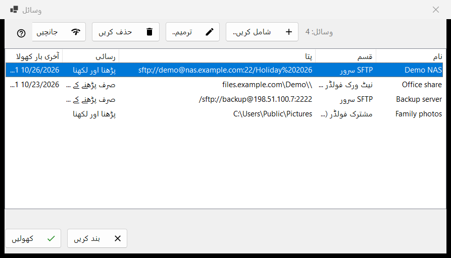
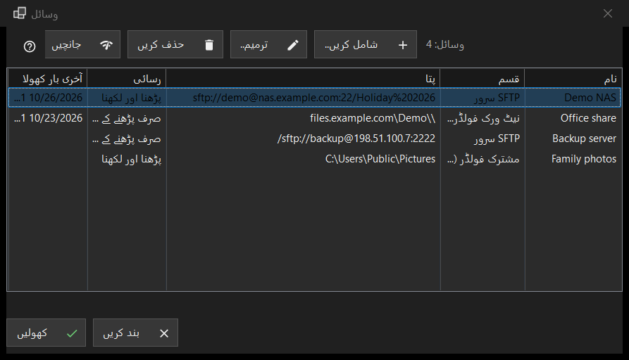

وسائل
یہ کس مقصد کے لیے ہے
سرورز اور نیٹ ورک فولڈرز کی وہ فہرست جسے ویوئر کھول سکتا ہے: SFTP سرورز، Windows نیٹ ورک فولڈرز (SMB) اور وہ فولڈرز جنہیں Share Manager اس کمپیوٹر سے شیئر کرتا ہے۔ یہ فولڈر مینو کی وسائل کا انتظام.. کمانڈ سے کھلتی ہے؛ یہی فہرست سیٹنگز ونڈو کے صفحے سرور اور وسائل میں بھی ہے۔


اس ترتیب میں
- شامل کریں.. بٹن دبا کر سرور کی تفصیلات بھریں، یا مزید بٹن سے سیٹنگز کی فائل درآمد کریں۔
- نئی قطار منتخب کر کے جانچیں دبائیں۔
- کھولیں دبائیں، یا قطار پر ڈبل کلک کریں: ویوئر جڑ کر سرور کے فولڈر دکھاتا ہے۔
- پتہ یا پاس ورڈ بدلنے کے لیے ترمیم کریں.. استعمال کریں، اور کسی وسیلے کو بھلانے کے لیے حذف کریں۔
عناصر
فہرست
کالم: نام، قسم، پتہ، رسائی اور آخری بار کھولا۔ قسم یہ ہو سکتی ہے: SFTP سرور، نیٹ ورک فولڈر (SMB) یا مشترک فولڈر (Share Manager)؛ رسائی میں لکھا ہوتا ہے صرف پڑھنے کے لیے یا پڑھنا اور لکھنا۔ فہرست کے نیچے ایک لائن وسائل کو گنتی ہے، اور جب کوئی وسیلہ نہ ہو تو ونڈو ایک اشارہ اور شامل کریں.. بٹن دکھاتی ہے۔ ترمیم کریں.. ، حذف کریں اور جانچیں بٹن (اور وسائل ونڈو کی نچلی قطار میں کھولیں بٹن) کو ایک منتخب قطار درکار ہے؛ اس سے پہلے ان کے ٹول ٹپ میں لکھا ہوتا ہے: پہلے فہرست سے ایک وسیلہ منتخب کریں
شامل کریں.. اور ترمیم کریں..
شامل کریں.. نئے وسیلے کا فارم کھولتا ہے اور ترمیم کریں.. منتخب وسیلے کا۔ وہاں لکھا گیا پاس ورڈ آپ کے Windows اکاونٹ کے لیے انکرپٹ کر کے رکھا جاتا ہے، فہرست میں کبھی نہیں۔
حذف کریں
حذف کریں پہلے پوچھتا ہے، اور ڈیفالٹ جواب نہیں ہے۔ سوال میں وسیلے کا نام ہوتا ہے اور بتایا جاتا ہے کہ اس کا محفوظ پاس ورڈ بھی ختم ہو جائے گا، جبکہ سرور کی فائلیں متاثر نہیں ہوتیں۔
جانچیں
جانچیں منتخب قطار کو کھولے بغیر پرکھتا ہے۔ SFTP سرور کے لیے یہ وسیلے کے ہر معلوم پتے کو آزماتا ہے اور ہر ایک کی رپورٹ host:port کی شکل میں دیتا ہے، ساتھ ایک فیصلہ: ایک بھی زندہ SSH جواب جانچ کو کامیاب بناتا ہے، کھلا پورٹ جو SSH نہ ہو وہ انتباہ ہے، اور خاموشی ناکامی۔ کوئی پاس ورڈ نہیں بھیجا جاتا۔ نیٹ ورک فولڈر کے لیے یہ محفوظ پاس ورڈ سے شیئر کھولتا ہے اور اس کا اوپری فولڈر پڑھتا ہے؛ پاس ورڈ محفوظ نہ ہو تو ترمیم کریں.. کے ذریعے ایک دینے کو کہتا ہے۔ Share Manager والی قطار کے لیے یہ صرف دیکھتا ہے کہ فولڈر اس کمپیوٹر پر موجود ہے یا نہیں۔
کھولیں
کھولیں، یا قطار پر ڈبل کلک، وسیلہ ویوئر کے حوالے کرتا ہے، جو جڑ کر اس کا فولڈر دکھاتا ہے۔ اگر پاس ورڈ محفوظ نہ ہو، یا محفوظ والا مسترد ہو جائے، تو پہلے ایک چھوٹی ونڈو اسے مانگتی ہے۔